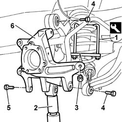
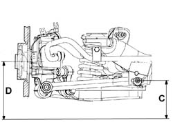

4450D15 Rear wheel hub STUB AXLE, left or right - R.R. Including replacement of bush, if necessary
- Path
- Procedures > 44 SUSPENSION AND WHEELS > 4450 HUBS AND WHEELS > 4450D REAR WHEEL HUBS > 4450D15 Rear wheel hub STUB AXLE, left or right - R.R. Including replacement of bush, if necessary
- Kind
- repair procedure (removal / refitting; the operation number is the code)
- Applies to
- all engines; all production periods
- Interactive page
- https://sloeber94.github.io/elrnDB-lThss/en/#/180293
Applies to: all engines; all production periods
 Removing
Removing
 Refitting
Refitting- Position the vehicle on a lift.
See in Op. 4450B11 Rear WHEEL (one) - R.R.
See in Op. 7055B44 Left rear wheel arch liner - R.R.
See in Op. 3310B36 REAR BRAKE CALIPER (one), left or right - R.R.
See in Op. 3310B48 REAR BRAKE DISC (one), left or right - R.R.
See in Op. 4440K30 LEFT OR RIGHT REAR INTELLIGENT SUSPENSION SHOCK ABSORBER (ONE) - R.R.
See in Op. 4450D10 Rear wheel HUB, left or right - R.R. with wheel removed
See in Op. 3310B59 Rear brake DISC GUARD (one), left or right- R.R.
See in Op. 4450D10 Rear wheel HUB, left or right - R.R. with wheel removed
1. Fit the tool for compressing the spring.
 | Description | Code | Function |
|---|---|---|---|
1 | Extractor - fitting tool | 1.870.829.000 | Compress and decompress the rear suspension coil springs at the bench |
2. Position a hydraulic device under the track control arm for safety reasons.
3. Undo the nut fixing the vertical rod to the stub axle.
4. Undo the bolts fixing the camber and toe in rods to the stub axle.
5. Undo the bolt fixing the stub axle to the track control arm.
6. Remove the wheel hub stub axle.

Applies to: all engines; all production periods
Refitting
Removing- Fit the wheel hub stub axle.
- Tighten the bolt fixing the stub axle to the track control arm.
- Tighten the bolt fixing toe in rod to the stub axle.
- Tighten the bolt fixing the rod to the stub axle.
- Tighten the nut fixing the connecting rod to the stub axle.
- Remove the hydraulic device placed under the track control arm.
- Remove the tool for compressing the spring.
| Description | Code | Function |
|---|---|---|---|
1 | Extractor - fitting tool | 1.870.829.000 | Compress and decompress the rear suspension coil springs at the bench |
See in Op. 4450D10 Rear wheel HUB, left or right - R.R. with wheel removed
See in Op. 3310B59 Rear brake DISC GUARD (one), left or right- R.R.
See in Op. 4450D10 Rear wheel HUB, left or right - R.R. with wheel removed
See in Op. 4440K30 LEFT OR RIGHT REAR INTELLIGENT SUSPENSION SHOCK ABSORBER (ONE) - R.R.
See in Op. 3310B48 REAR BRAKE DISC (one), left or right - R.R.
See in Op. 3310B36 REAR BRAKE CALIPER (one), left or right - R.R.
See in Op. 7055B44 Left rear wheel arch liner - R.R.
See in Op. 4450B11 Rear WHEEL (one) - R.R.
- Place the vehicle in Standard "A" conditions, in other words with the vehicle mass complete, spare wheel, tool kit, all supplies and accessories (oil, engine coolant, etc.) and a full fuel tank.
- Check that the tyre inflation pressure is correct.
- Position the vehicle on a support so that the wheels are resting on the ground
Applies to: engines: 2.4 20V; all production periods
- Check that after the vehicle has been placed in standard "A" conditions, the measurement "D"-"C" corresponds to the figure given in the table below.
 | Subject | Value |
|---|---|---|
. | Rear wheel geometry | mm |
- | D - C | 21 ± 5 |
- | Standard A | - |

Applies to: engines: 2.4 JTD 10V; all production periods
- Check that after the vehicle has been placed in standard "A" conditions, the measurement "D"-"C" corresponds to the figure given in the table below.
| Subject | Value |
|---|---|---|
. | Rear wheel geometry | mm |
- | D - C | 21 ± 5 |
- | Standard A | - |
Applies to: engines: 3.0 V6, 3.2 V6; all production periods
- Check that after the vehicle has been placed in standard "A" conditions, the measurement "D"-"C" corresponds to the figure given in the table below.
| Subject | Value |
|---|---|---|
. | Rear wheel geometry | mm |
- | D - C | 21 ± 5 |
- | Standard A | - |
Applies to: engines: 2.0 TB; all production periods
- Check that after the vehicle has been placed in standard "A" conditions, the measurement "D"-"C" corresponds to the figure given in the table below.
| Subject | Value |
|---|---|---|
. | Rear wheel geometry | mm |
- | D - C | 21 ± 5 |
- | Standard A | - |
Applies to: engines: 2.4 JTD 20V; all production periods
- Check that after the vehicle has been placed in standard "A" conditions, the measurement "D"-"C" corresponds to the figure given in the table below.
| Subject | Value |
|---|---|---|
. | Rear wheel geometry | mm |
- | D - C | 21 ± 5 |
- | Standard A | - |
Applies to: all engines; all production periods
- Tighten the bolt fixing the stub axle to the track control arm.
 | Value - daNm | Fastening | Component | Ø |
|---|---|---|---|---|
. | 11 | Bolt | STEERING KNUCKLE/REAR STUB AXLES | M12 |
- Tighten the bolt fixing the toe in rod to the stub axle to torque.
| Value - daNm | Fastening | Component | Ø |
|---|---|---|---|---|
. | 10 | Bolt | TOE IN RODS | M12 |
- Tighten the bolts fixing the rod to the steering knuckle to torque.
| Value - daNm | Fastening | Component | Ø |
|---|---|---|---|---|
. | (Steering knuckle) 11 | Bolt | HOUSING LINK | M12X1.25 |
- Tighten the nut fixing the connecting rod to the steering knuckle.
| Value - daNm | Fastening | Component | Ø |
|---|---|---|---|---|
. | (Steering knuckle) 12 | Nut | VERTICAL CONNECTING ROD | M12X1.25 |
Topics linked from this page (8)
- 3310B36 REAR BRAKE CALIPER (one), left or right - R.R.
- 3310B48 REAR BRAKE DISC (one), left or right - R.R.
- 3310B59 Rear brake DISC GUARD (one), left or right- R.R.
- 4440K30 LEFT OR RIGHT REAR INTELLIGENT SUSPENSION SHOCK ABSORBER (ONE) - R.R.
- 4450A40 REAR WHEEL GEOMETRY - Check using optical equipment - Includes rear wheel toe-in adjustment if necessary
- 4450B11 Rear WHEEL (one) - R.R.
- 4450D10 Rear wheel HUB, left or right - R.R. with wheel removed
- 7055B44 Left rear wheel arch liner - R.R.